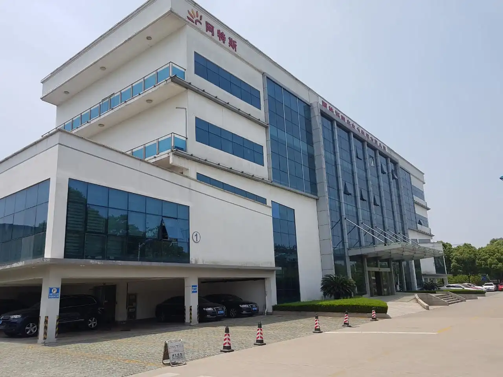

Canadian Solar
A Canadian Solar é uma das maiores fabricantes de módulos fotovoltaicos do mundo, com presença em mais de 160 países e mais de 20 anos de experiência no setor. Fundada em 2001 no Canadá, a empresa possui fábricas de última geração e centros de pesquisa espalhados pelo mundo, o que garante a constante evolução de suas tecnologias e a excelência na fabricação de equipamentos solares de alta performance.
O portfólio da Canadian Solar inclui painéis monocristalinos de alta eficiência, com destaque para as tecnologias PERC, TOPCon (N-type) e bifaciais, que oferecem maior rendimento energético mesmo em condições de baixa irradiância. A empresa também fornece inversores, soluções para armazenamento de energia (ESS) e sistemas para usinas de grande porte (utility-scale), atendendo desde projetos residenciais até instalações comerciais e industriais de alta demanda.
Com eficiência que supera os 22% em alguns modelos, estrutura robusta e garantia estendida de até 30 anos em performance, os módulos da Canadian Solar são projetados para máxima durabilidade e confiabilidade em ambientes diversos. A empresa ainda se destaca pela forte atuação em projetos de EPC e desenvolvimento de usinas solares, oferecendo soluções completas e tecnicamente avançadas para o mercado global.